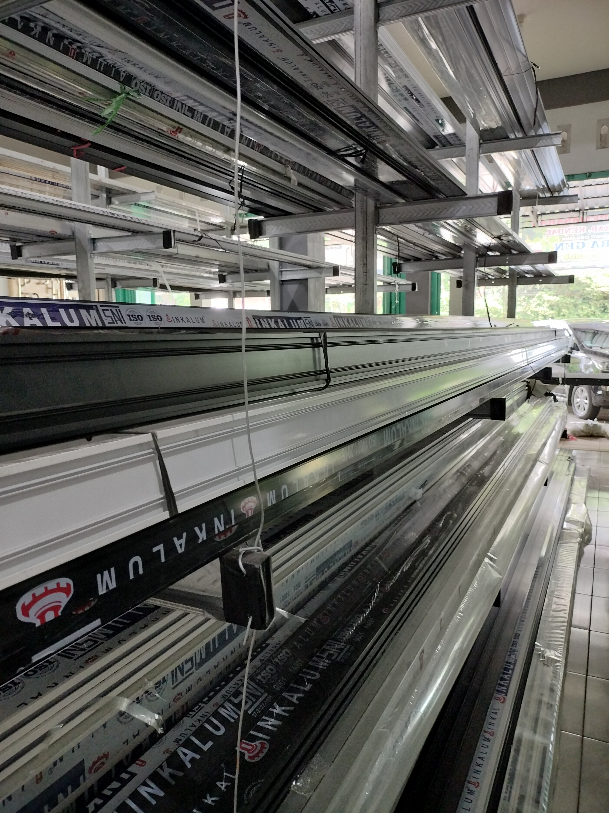
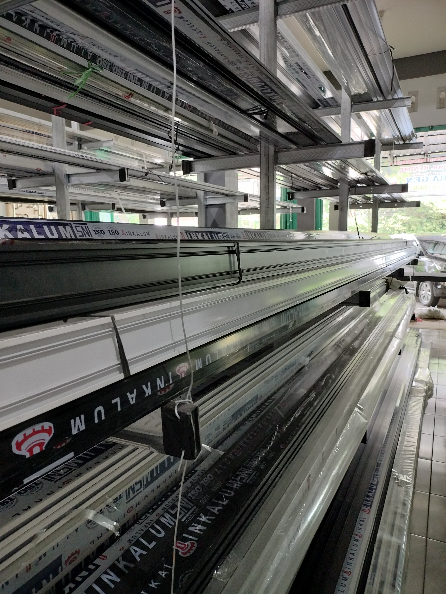

Tentang Barakah Aluminium
Barakah Aluminium adalah toko spesialis bahan bangunan yang menyediakan berbagai macam produk aluminium, kaca, baut, mur, ring, dan aksesoris pendukung lainnya untuk kebutuhan konstruksi, industri, maupun pribadi. Kami telah berkomitmen sejak awal berdiri untuk menjadi toko pilihan utama dengan pelayanan yang cepat, jujur, dan profesional.
Sejarah Kami
Didirikan pada tahun 2012 di Sukorejo, Kendal, Barakah Aluminium bermula dari toko sederhana yang hanya menjual aluminium potong. Seiring dengan meningkatnya permintaan dan kepercayaan pelanggan, kami memperluas layanan hingga mencakup penyediaan aksesoris, kaca bangunan, baut-mur-ring lengkap, dan jasa pemotongan serta pengelasan. Kini, toko kami telah melayani ratusan pelanggan dari berbagai kota di Jawa Tengah.
Visi
Menjadi toko aluminium dan konstruksi terdepan yang dikenal atas kualitas, kecepatan, dan kejujuran dalam pelayanan.
Misi
- ✅ Menyediakan produk terbaik dengan harga kompetitif
- ✅ Melayani pelanggan dengan sepenuh hati dan tanggap
- ✅ Memberikan solusi tepat untuk setiap kebutuhan konstruksi
- ✅ Menjadi pusat referensi aluminium dan perlengkapannya di Kendal
Nilai-Nilai Kami
- Integritas: Kejujuran adalah dasar utama kami dalam melayani pelanggan.
- Kualitas: Hanya produk terbaik yang kami sediakan, demi kepuasan jangka panjang.
- Inovasi: Kami terus memperbarui produk dan layanan sesuai dengan perkembangan zaman.
- Pelayanan: Kepuasan pelanggan adalah ukuran keberhasilan kami.
Galeri Toko & Kegiatan
 

Testimoni Pelanggan
"Sudah langganan 3 tahun di Barakah Aluminium. Kualitas barangnya bagus, pengiriman cepat, dan harganya bersaing." – Bapak Andi, Kontraktor Bangunan
"Suka banget belanja di sini. CS-nya ramah dan bisa konsultasi bahan sebelum beli." – Ibu Sari, Pemilik Toko Kaca
Mengapa Harus Barakah Aluminium?
- 📦 Stok selalu tersedia dan lengkap
- 🛠️ Bisa pesan ukuran custom
- 📍 Lokasi mudah diakses dan parkir luas
- 👨🔧 Ada layanan pengelasan dan potong langsung di tempat
- 🧾 Bisa order via WhatsApp, praktis dan cepat
Hubungi Kami Sekarang
Kami percaya bahwa setiap bangunan hebat dimulai dari bahan berkualitas dan tim yang tepat. Barakah Aluminium hadir untuk mendukung proyek Anda dari awal hingga selesai. Kunjungi toko kami atau hubungi tim kami untuk mendapatkan penawaran terbaik hari ini.
Hubungi Kami Sekarang
Butuh bantuan lebih lanjut atau ingin konsultasi langsung? Tim kami siap melayani Anda. Silakan hubungi kami melalui: